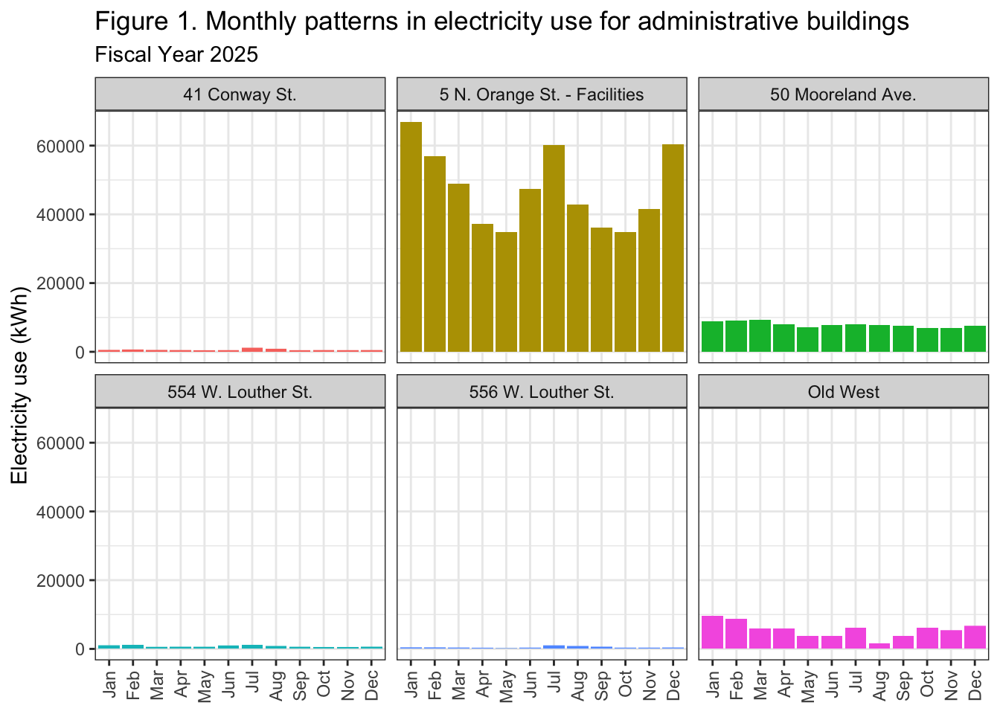

Report_Section_1_Admin
Amiya Marbles & Eva Hanlin
03/30/26
Last updated: 2026-03-30
Checks: 7 0
Knit directory: dickinson_power/
This reproducible R Markdown analysis was created with workflowr (version 1.7.2). The Checks tab describes the reproducibility checks that were applied when the results were created. The Past versions tab lists the development history.
Great! Since the R Markdown file has been committed to the Git repository, you know the exact version of the code that produced these results.
Great job! The global environment was empty. Objects defined in the global environment can affect the analysis in your R Markdown file in unknown ways. For reproduciblity it’s best to always run the code in an empty environment.
The command set.seed(20260107) was run prior to running
the code in the R Markdown file. Setting a seed ensures that any results
that rely on randomness, e.g. subsampling or permutations, are
reproducible.
Great job! Recording the operating system, R version, and package versions is critical for reproducibility.
Nice! There were no cached chunks for this analysis, so you can be confident that you successfully produced the results during this run.
Great job! Using relative paths to the files within your workflowr project makes it easier to run your code on other machines.
Great! You are using Git for version control. Tracking code development and connecting the code version to the results is critical for reproducibility.
The results in this page were generated with repository version f8eac05. See the Past versions tab to see a history of the changes made to the R Markdown and HTML files.
Note that you need to be careful to ensure that all relevant files for
the analysis have been committed to Git prior to generating the results
(you can use wflow_publish or
wflow_git_commit). workflowr only checks the R Markdown
file, but you know if there are other scripts or data files that it
depends on. Below is the status of the Git repository when the results
were generated:
Ignored files:
Ignored: .DS_Store
Ignored: .Rhistory
Ignored: .Rproj.user/
Ignored: analysis/.DS_Store
Ignored: analysis/.Rhistory
Ignored: analysis_to-fix/.DS_Store
Ignored: data/.DS_Store
Ignored: data/FY25 Main Meter Data.xlsx
Ignored: data/building_list_FY25_updated.xlsx
Ignored: data/graph_data_life_exp.csv
Ignored: data/housing_counts.csv
Ignored: keys/.DS_Store
Ignored: output/annual_kwh.csv
Ignored: output/building_check.csv
Ignored: output/building_check.xlsx
Ignored: output/daily_kwh.csv
Ignored: output/kwh_academic_2026-03-16.csv
Ignored: output/kwh_academic_2026-03-17.csv
Ignored: output/kwh_academic_2026-03-18.csv
Ignored: output/kwh_academic_2026-03-22.csv
Ignored: output/kwh_academic_2026-03-23.csv
Ignored: output/kwh_academic_2026-03-25.csv
Ignored: output/kwh_academic_2026-03-30.csv
Ignored: output/kwh_annual.csv
Ignored: output/kwh_annual_2026-03-04.csv
Ignored: output/kwh_annual_2026-03-12.csv
Ignored: output/kwh_annual_2026-03-16.csv
Ignored: output/kwh_annual_2026-03-17.csv
Ignored: output/kwh_annual_2026-03-18.csv
Ignored: output/kwh_annual_2026-03-22.csv
Ignored: output/kwh_annual_2026-03-23.csv
Ignored: output/kwh_annual_2026-03-25.csv
Ignored: output/kwh_annual_2026-03-30.csv
Ignored: output/kwh_annual_20260225.csv
Ignored: output/kwh_annual_20260226.csv
Ignored: output/kwh_daily.csv
Ignored: output/kwh_daily_2026-03-04.csv
Ignored: output/kwh_daily_2026-03-12.csv
Ignored: output/kwh_daily_2026-03-16.csv
Ignored: output/kwh_daily_2026-03-17.csv
Ignored: output/kwh_daily_2026-03-18.csv
Ignored: output/kwh_daily_2026-03-22.csv
Ignored: output/kwh_daily_2026-03-23.csv
Ignored: output/kwh_daily_2026-03-25.csv
Ignored: output/kwh_daily_2026-03-30.csv
Ignored: output/kwh_daily_20260225.csv
Ignored: output/kwh_daily_20260226.csv
Ignored: output/kwh_main_annual.csv
Ignored: output/kwh_main_daily.csv
Note that any generated files, e.g. HTML, png, CSS, etc., are not included in this status report because it is ok for generated content to have uncommitted changes.
These are the previous versions of the repository in which changes were
made to the R Markdown (analysis/Report_I_Admin.rmd) and
HTML (docs/Report_I_Admin.html) files. If you’ve configured
a remote Git repository (see ?wflow_git_remote), click on
the hyperlinks in the table below to view the files as they were in that
past version.
| File | Version | Author | Date | Message |
|---|---|---|---|---|
| Rmd | 7140aff | maggiedouglas | 2026-03-30 | attempt to update website to integrate new student results |
| html | 7140aff | maggiedouglas | 2026-03-30 | attempt to update website to integrate new student results |
| Rmd | 10db689 | maggiedouglas | 2026-03-30 | change navigation bar and add student report sections |
Background
There are 11 total administrative buildings listed in this campus category, accounting for a combined 188,060 square feet of space. However, since the electricity dataset only covers 6 of these buildings 5 with individual meters and Old West on a submeter, we are actively analyzing 137,948 square feet, which is about 73% of the total administrative footprint. These administration buildings are mainly used on a typical 9-5pm schedule year round and cover a highly diverse range of campus operations, including executive leadership in Old West, essential student facing buildings, campus backbone departments like Facilities Management and IT, and specialized ROTC offices. There is a massive spread in the physical size of these buildings, which will heavily impact electricity usage. The Facilities Management building at 5 N. Orange St. is by far the largest at 75,000 sq. ft., followed by Old West at 30,208 sq. ft., while the smallest spaces are converted residential style structures like the 1,440 sq. ft. ROTC office and the 1,800 sq. ft. IT Storage Annex. Additionally, the architecture spans over two centuries, meaning energy efficiency and insulation likely vary wildly, ranging from the historic 1803 anchor of Old West to mid century buildingd and recently renovated spaces like Waidner Admissions and the ROTC offices.
kwh_academic <- read_csv("./output/kwh_academic_2026-03-17.csv")Rows: 99 Columns: 8
── Column specification ────────────────────────────────────────────────────────
Delimiter: ","
chr (3): type, meter, NAME
dbl (5): days_perc, kwh, kwh_corr, sqft, occupants
ℹ Use `spec()` to retrieve the full column specification for this data.
ℹ Specify the column types or set `show_col_types = FALSE` to quiet this message.kwh_academic <- kwh_academic %>%
mutate(across(where(is.character), as.factor))
academic_admin <- filter(kwh_academic, type == "Admin")
ghg_kg <- 0.30082405
cost_multiplier <- 0.08138507
final_academic_admin <- academic_admin %>%
mutate(
GHG.MT = round(kwh_corr * ghg_kg) / 1000,
cost = round(kwh_corr * cost_multiplier),
kwh_sqft = round(kwh_corr / sqft)
) %>%
arrange(desc(kwh_corr)) %>%
select(-type)
final_academic_admin# A tibble: 6 × 10
meter NAME days_perc kwh kwh_corr sqft occupants GHG.MT cost kwh_sqft
<fct> <fct> <dbl> <dbl> <dbl> <dbl> <dbl> <dbl> <dbl> <dbl>
1 Individ… 5 N.… 100 3.71e5 371382. 75000 NA 112. 30225 5
2 Individ… 50 M… 100 6.54e4 65382. 27100 NA 19.7 5321 2
3 Submeter Old … 96.7 5.17e4 53432. 30208 NA 16.1 4349 2
4 Individ… 554 … 100 5.29e3 5289. 1440 NA 1.59 430 4
5 Individ… 41 C… 100 3.68e3 3685. 2200 NA 1.11 300 2
6 Individ… 556 … 100 2.79e3 2792. 2000 NA 0.84 227 1str(final_academic_admin)tibble [6 × 10] (S3: tbl_df/tbl/data.frame)
$ meter : Factor w/ 4 levels "Individual","Main Meter - Total",..: 1 1 3 1 1 1
$ NAME : Factor w/ 99 levels "100 S. West St.",..: 32 33 82 46 25 47
$ days_perc: num [1:6] 100 100 96.7 100 100 ...
$ kwh : num [1:6] 371382 65382 51680 5289 3685 ...
$ kwh_corr : num [1:6] 371382 65382 53432 5289 3685 ...
$ sqft : num [1:6] 75000 27100 30208 1440 2200 ...
$ occupants: num [1:6] NA NA NA NA NA NA
$ GHG.MT : num [1:6] 111.72 19.67 16.07 1.59 1.11 ...
$ cost : num [1:6] 30225 5321 4349 430 300 ...
$ kwh_sqft : num [1:6] 5 2 2 4 2 1admin_daily_df <- kwh_daily %>%
mutate(across(where(is.character), as.factor)) %>%
filter(type == "Admin") %>%
mutate(
date = ymd(date),
month = month(date, label = TRUE, abbr = FALSE),
day_of_week = wday(date, label = TRUE, abbr = TRUE),
kwh_sqft_yr = (kwh * 365) / sqft
)
str(admin_daily_df)tibble [2,190 × 13] (S3: tbl_df/tbl/data.frame)
$ type : Factor w/ 13 levels "Academic","Admin",..: 2 2 2 2 2 2 2 2 2 2 ...
$ meter : Factor w/ 4 levels "Individual","Main Meter - Total",..: 1 1 1 1 1 1 1 1 1 1 ...
$ NAME : Factor w/ 102 levels "100 S. West St.",..: 25 25 25 25 25 25 25 25 25 25 ...
$ days_perc : num [1:2190] 100 100 100 100 100 100 100 100 100 100 ...
$ sqft : num [1:2190] 2200 2200 2200 2200 2200 2200 2200 2200 2200 2200 ...
$ occupants : num [1:2190] NA NA NA NA NA NA NA NA NA NA ...
$ period : Factor w/ 4 levels "Fall Semester",..: 3 3 3 3 3 3 3 3 3 3 ...
$ date : Date[1:2190], format: "2024-07-01" "2024-07-02" ...
$ kwh : num [1:2190] 22.8 20.3 24.3 17.7 18.2 ...
$ ave_temp : num [1:2190] 69 73 78 81 84 86 84 84 86 87 ...
$ month : Ord.factor w/ 12 levels "January"<"February"<..: 7 7 7 7 7 7 7 7 7 7 ...
$ day_of_week: Ord.factor w/ 7 levels "Sun"<"Mon"<"Tue"<..: 2 3 4 5 6 7 1 2 3 4 ...
$ kwh_sqft_yr: num [1:2190] 3.78 3.36 4.04 2.94 3.01 ...head(admin_daily_df)# A tibble: 6 × 13
type meter NAME days_perc sqft occupants period date kwh ave_temp
<fct> <fct> <fct> <dbl> <dbl> <dbl> <fct> <date> <dbl> <dbl>
1 Admin Indivi… 41 C… 100 2200 NA Summe… 2024-07-01 22.8 69
2 Admin Indivi… 41 C… 100 2200 NA Summe… 2024-07-02 20.3 73
3 Admin Indivi… 41 C… 100 2200 NA Summe… 2024-07-03 24.3 78
4 Admin Indivi… 41 C… 100 2200 NA Summe… 2024-07-04 17.7 81
5 Admin Indivi… 41 C… 100 2200 NA Summe… 2024-07-05 18.2 84
6 Admin Indivi… 41 C… 100 2200 NA Summe… 2024-07-06 18.4 86
# ℹ 3 more variables: month <ord>, day_of_week <ord>, kwh_sqft_yr <dbl>Electricity Use Summary
Determining a ‘typical’ administrative building on campus is difficult given the large fluctuation in square footage, which generally has a positive correlation to total electricity use. However, based on averaged data from Mooreland Avenue and 554 West Louther Street, a typical administrative building of about 14,270 square feet uses approximately 51,828.59 kWh per year, operating at an intensity of 5 kWh/sqft. This typical usage translates to an estimated financial cost of $4,218 and greenhouse gas emissions of 15.591 metric tons of CO2e annually. We see a wide range of variability in both total electricity use and intensity across these buildings. 5 North Orange Street is the largest building and the largest consumer overall, using 567,745.2 kWh/year and charting the highest intensity at 8 kWh/sqft. Conversely, 556 West Louther Street has the smallest total electricity use per fiscal year at 4,985.55 kWh, and ties with Old West for the lowest electricity intensity at just 2 kWh/sqft. Furthermore, total electricity use is not always the best indicator of efficiency; for instance, 554 West Louther Street is the smallest building but has the second-highest electricity use per square foot. When comparing Dickinson’s electricity intensity to similar buildings at other colleges and universities, the campus performs well. The EIA notes that average administrative buildings at other institutions use 227,000 kWh per year at an average of 13.5 kWh/sqft, with a median of 9.7 kWh/sqft. Even Dickinson’s most intensive building, 5 North Orange Street (8 kWh/sqft), falls below the EIA median and average, indicating effective electricity management despite being almost five times the size of the EIA average building footprint of 16,800 square feet.
datatable(kwh_annual_admin_df,
rownames = FALSE,
colnames = c("Meter", "Building", "Days of data (%)", "Square footage", "kWh per year", "kWh (corrected)", "kWh per sqft", "Cost ($)", "CO2e (MT)"),
filter = "none",
class = "compact",
options = list(pageLength = 6, autoWidth = TRUE, dom ='t'), caption = "Table 1. Total electricity use, estimated financial cost, and estimated greenhouse gas emissions of administrative buildings during fiscal year 2025.")###### Table 1. Total electricity use, estimated financial cost, and estimated greenhouse gas emissions of administrative buildings during fiscal 2025. It’s hard to determine a ‘typical’ administrative building on Dickinson College campus given the large fluctuation in square footage that, based on the data, has a positive correlation to electricity use. Generally the larger the square footage, the larger the total electricity use. However, when we come to electricity use per square foot, we can see that total electricity use isn’t the best indicator of electricity efficiency. 5 North Orange Street is the largest building with the largest total electricity use and largest electricity use per square foot but 554 West Louther Street is the smallest building with the third smallest total electricity use but the second highest electricity use per square foot. Using a scale of 2-8 kWh/sqft (2 being the smallest kWh/sqft recorded, and 8 being the largest) the average kWh/sqft is between Mooreland Avenue and 554 West Louther Street, at about 5 kWh/sqft. Based on Mooreland Avenue and 554 West Louther Street’s averaged data for kWh/year, cost in USD, and CO2e measured in metric tons, the ‘typical’ administrative building may follow the following characteristics: - Square footage: 14,270 - kWh/year: 51/828.5925 kWh/yr - kWh/sqft: 5 kWh/sqft - Cost ($): $4,218 -CO2e (MT): 15.591 MT. 5 North Orange Street is by far the largest consumer of total electricity use per fiscal year and per square foot, at 567,745.2 kWh/year and 8 kWh/sqft respectively, while 556 West Louther Street and Old West are tied for smallest electricity use per square foot, both at 2 kWh/sqft, and 556 West Louther Street has the smallest total electricity use per fiscal year at 4,985.555 kWh/sqft. We see a wide range of variability in electricity use across administrative buildings on campus and the associated costs and greenhouse gas emissions, which will be discussed in the recommendations section of our paper. The EIA categorizes administrative or professional office buildings at other Colleges and Universities as using an average of 227,000 kWh per building per year, at an average of 13.5 kWh/sqft. The median of electricity use per square foot falls at 9.7 kWh/sqft while the low end measurement falls at 6.1 kWh/sq ft and the high end measurement falls at 15.5 kWh/sq ft. It’s important to note that the average square footage per building is 16,800 sqft which is much larger than our three smallest buildings and much smaller than our three largest buildings, making it not an ideal comparison for our building set. 5 North Orange Street at a square footage of 75,000 is almost five times the size of the average administrative building on other college campuses and uses about twice as much electricity per year which indicates that for its size, 5 North Orange Street does seem to be managing electricity use well for its size. Its kWh/sqft even falls below the median and average of electricity use per square foot. As 5 North Orange Street is our largest electricity user in all categories for the fiscal year, this seems to bode well for our other buildings, but size is still an important factor to consider when we make comparisons between an average building size of 16,800 sqft and buildings as low as 1,440 sqft. datatable(final_academic_admin,
rownames = FALSE,
colnames = c("Meter", "Building", "Days of data (%)", "Square footage", "kWh per year", "kWh (corrected)", "kWh per sqft", "Cost ($)", "CO2e (MT)"),
filter = "none",
class = "compact",
options = list(pageLength = 6, autoWidth = TRUE, dom ='t'), caption = "Table 2. Total electricy use, estimated financial cost, and estimated greenhouse gas emissions of administrative buildings during academic year 2024/2025.")###### Table 2. Total electricity use, estimated financial cost, and estimated greenhouse gas emissions of administrative buildings during academic year 2024/2025. The biggest electricity user for the academic year is still 5 North Orange Street at 371,381.6 kWh/year and 5 kWh/sqftt while the smallest electricity user is 556 West Louther Street at 2,791.509 kWh per year and 1 kWh/sqft. This is different from the fiscal year where Old West is overall one of the smallest electricity users per square foot whereas during the academic year Old West becomes one of the second least electricity users per square foot. While this doesn’t seem to be a big change, Old West is tied with 50 Mooreland Avenue and 41 Conway Street for second least, with Old West having the largest electricity use per year out of the three of them. There is less variability during the academic year compared to the fiscal year which could be due to having more data for Old West for the academic year than we have for the fiscal year, though it should still be emphasized we only have 96% of academic year days of data compared to the other buildings’ 100%. Dickinson College’s administrative buildings’ electricity use still remains low compared to the administrative buildings on other college campuses compiled by the EIA, both in terms of total electricity use and per square foot but it is important again to note the vast difference in average size of other colleges’ administrative buildings compared to ours. library(tidyverse)
library(paletteer)
ggplot(admin_daily_df, aes(x = month, y = kwh, fill = NAME)) +
geom_col() +
facet_wrap(~ NAME) +
scale_fill_paletteer_d("ggthemes::Tableau_20") +
theme_bw() +
theme(
axis.text.x = element_text(angle = 90, vjust = 0.5, hjust = 1),
legend.position = "none"
) +
labs(
title = "Monthly patterns in electricity use by building for Admin buildings in FY25",
x = NULL,
y = "Electricity use (kWh)"
)Warning: Removed 29 rows containing missing values or values outside the scale range
(`geom_col()`).
| Version | Author | Date |
|---|---|---|
| 7140aff | maggiedouglas | 2026-03-30 |
###### Figure 1. Monthly changes in how much electricity administrative buildings used in FY25. This bar plot with facets shows how much electricity (in kWh) the college's administrative buildings used each month. Note: There is a known gap in data collection for all buildings connected to the Weiss Meter (including Old West) during part of August. This makes the reported total for that month seem lower than it really is. eia_median <- 10.1
eia_q25 <- 6.1
eia_q75 <- 15.7
ggplot(admin_daily_df, aes(
x = reorder(NAME, kwh_sqft_yr, FUN = median, na.rm = TRUE),
y = kwh_sqft_yr,
fill = NAME
)) +
annotate("rect", ymin = eia_q25, ymax = eia_q75, xmin = -Inf, xmax = Inf,
alpha = 0.2, fill = "gray50") +
geom_hline(yintercept = eia_median, linetype = "dashed", color = "black", linewidth = 0.8) +
geom_boxplot(alpha = 0.9, outlier.alpha = 0.5) +
scale_fill_paletteer_d("ggthemes::Tableau_20") +
coord_flip() +
facet_wrap(~ period) +
theme_bw() +
theme(
legend.position = "none"
) +
labs(
title = "Electricity intensity by building for Admin buildings in FY25.",
subtitle = "Dashed line = EIA 2018 Median; Gray band = EIA 2018 IQR",
x = NULL,
y = "Electricity Intensity (kWh/sqft/year)"
)Warning: Removed 29 rows containing non-finite outside the scale range
(`stat_boxplot()`).
| Version | Author | Date |
|---|---|---|
| 7140aff | maggiedouglas | 2026-03-30 |
###### Figure 2. Annualized daily electricity intensity by academic period and administrative building. This faceted boxplot shows how the daily electricity intensity (kWh/sqft/year) for administrative buildings changes throughout the year. The median usage of a building is used to rank it from highest to lowest. The horizontal dashed black line shows the national median (10.1 kWh/sqft/year), and the shaded gray band shows the interquartile range (6.1 to 15.7 kWh/sqft/year) from the EIA 2018 Commercial Buildings Energy Consumption Survey. Recommendations
Sources
Leary,N. (2025). Dickinson College greenhouse gas inventory. Dickinson College.U.S. Energy Information Administration. (2022). 2018 Commercial Buildings Energy Consumption Survey (CBECS). U.S. Department of Energy. https://www.eia.gov/consumption/commercial/
Partner Contributions
Amiya did the Background section, adapted Eva & I code from PS5 into our report section 1, prepare data section, and Figure 1 and 2. As well as the Electricty use summary and sources. Eva did the Table 1 and table 2 as well as the recommendation section.
sessionInfo()R version 4.5.2 (2025-10-31)
Platform: x86_64-apple-darwin20
Running under: macOS Ventura 13.7.8
Matrix products: default
BLAS: /Library/Frameworks/R.framework/Versions/4.5-x86_64/Resources/lib/libRblas.0.dylib
LAPACK: /Library/Frameworks/R.framework/Versions/4.5-x86_64/Resources/lib/libRlapack.dylib; LAPACK version 3.12.1
locale:
[1] en_US.UTF-8/en_US.UTF-8/en_US.UTF-8/C/en_US.UTF-8/en_US.UTF-8
time zone: America/New_York
tzcode source: internal
attached base packages:
[1] stats graphics grDevices utils datasets methods base
other attached packages:
[1] rmarkdown_2.30 paletteer_1.7.0 DT_0.34.0 lubridate_1.9.5
[5] forcats_1.0.1 stringr_1.6.0 purrr_1.2.1 tidyr_1.3.2
[9] tibble_3.3.1 ggplot2_4.0.2 tidyverse_2.0.0 RColorBrewer_1.1-3
[13] readr_2.2.0 dplyr_1.2.0 workflowr_1.7.2
loaded via a namespace (and not attached):
[1] gtable_0.3.6 xfun_0.56 bslib_0.10.0 htmlwidgets_1.6.4
[5] processx_3.8.6 callr_3.7.6 tzdb_0.5.0 vctrs_0.7.1
[9] tools_4.5.2 crosstalk_1.2.2 ps_1.9.1 generics_0.1.4
[13] parallel_4.5.2 pkgconfig_2.0.3 S7_0.2.1 lifecycle_1.0.5
[17] compiler_4.5.2 farver_2.1.2 git2r_0.36.2 getPass_0.2-4
[21] httpuv_1.6.16 htmltools_0.5.9 sass_0.4.10 yaml_2.3.12
[25] later_1.4.8 pillar_1.11.1 crayon_1.5.3 jquerylib_0.1.4
[29] whisker_0.4.1 cachem_1.1.0 tidyselect_1.2.1 digest_0.6.39
[33] stringi_1.8.7 rematch2_2.1.2 labeling_0.4.3 rprojroot_2.1.1
[37] fastmap_1.2.0 grid_4.5.2 cli_3.6.5 magrittr_2.0.4
[41] utf8_1.2.6 withr_3.0.2 scales_1.4.0 promises_1.5.0
[45] bit64_4.6.0-1 timechange_0.4.0 httr_1.4.8 bit_4.6.0
[49] otel_0.2.0 hms_1.1.4 evaluate_1.0.5 knitr_1.51
[53] rlang_1.1.7 Rcpp_1.1.1 glue_1.8.0 rstudioapi_0.18.0
[57] vroom_1.7.0 jsonlite_2.0.0 R6_2.6.1 prismatic_1.1.2
[61] fs_1.6.7